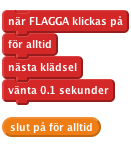

Introduktion
I det här spelet finns tre sprites som ändrar klädslar. Du ska stoppa dem när de visar samma bild (som en enarmad bandit!).
STEG 1: Skapa en sprite som ändrar klädsel
Nu ska vi importera bilder till spelet
Checklista
- Skapa ett nytt Scratchprojekt. Radera katten genom att högerklicka på den och välj radera.
- Importera en ny sprite.
- Välj en bild från valfri mapp. Vi använde things/bananas1, men du kan använda vilken bild du vill.
- Klicka på klädslar-fliken och importera två bilder så att det blir tre bilder totalt
(vi använde animals/1 och things/lego, men du kan använda vilka bilder du vill).
Nu när vi har klädslar vill vi att spriten ska kunna byta mellan dem.
STEG 2: Få bilden att ändras
Checklista
- Klicka på Scripts-fliken.
- Klicka på Kontroll och dra “när flagga klickas på” till Scriptrutan. Detta kommer att utlösas när vi klickar på den gröna flaggan.
- Lägg till “för alltid” så att den sitter ihop med undersidan av “när flagga klickas på”.
- Klicka på den gröna flaggan i det högra hörnet. Lägg märke till att en vit linje ramar in vårt script. Detta händer eftersom vi klickade på den gröna flaggan.
- Klicka nu på Utseende och dra in “nästa klädsel” så att den passar.
- Hur gör vi så att det går långsammare och den inte ändras så fort? Klicka på Kontroll och dra in “vänta 1 sekunder”.
- Ändra tiden tills det upprepas i en snabbare takt (tiden 0.1 sekunder ser bra ut). Vad skulle hända om vi inte hade väntablocket?

Testa ditt projekt
Klicka på den gröna flaggan.
Ändras klädslarna i lagom takt?
Spara ditt projekt
Saker att pröva
Ändra tiden i väntablocket. Vilka siffror tror du skulle göra spelet för lätt eller för svårt?
Steg 3: Stoppa spriten när vi klickar på den
Bra! Vi kan nu få spritearna att byta klädslar för alltid, men hur får vi dem att stoppa när vi klickar på dem?
Checklista
- Skapa en ny variabel genom att klicka på Variabler och Ny variabel. Kalla den för “stopp” och välj att den endast ska finnas för denna sprite. Klicka sedan ur rutan bredvid så att variabeln inte syns på scenen.
- Sätt stoppad till 1 när någon klickar på bilden genom att använda “när Sprite 1 klickas på” och “sätt stoppad till 0”. Där du ska byta ut nollan mot en etta.
- Nu måste vi få bilden att sluta ändras när variabeln stoppad blir 1. Klicka på Kontroll och ändra “för alltid”-loopen till “för alltid om” och skapa en ny likhetsoperator för att se om stoppad är lika med 0.
- Slutligen, lägg till en “sätt stoppad till 0” under “när flaggan klickas på”.
Testa ditt projekt
Klicka på den gröna flaggan, vänta en liten stund och klicka sedan på spriten.
Ändrar den klädsel innan du klickar på den?
Slutar den när du klickar på den?
Starta spriten igen. Stannar den när du håller muspekaren över spriten, utan att klicka på den? Stannar spriten när du klickar någon annanstans på scenen? Någon annanstans i Scratchfönstret? Någonstans utanför Scratchfönstret?
Spara ditt projekt
Steg 4: Skapa den andra spriten
Nu ska vi skapa de andra spritearna så att vi kan spela vårt spel!
- Duplicera spriten (Sprite1) genom att högerklicka på den i det högra nedre hörnet.
- Duplicera den igen så att det finns tre sprites på skärmen.
- Flytta på varje sprite så att de hamnar bredvid varandra på en linje. Gör dem lite mindre om det behövs.
Testa ditt projekt
Klicka på den gröna flaggan. Alla sprites ska ändras. Försök att få dem alla att stanna på samma bild!
Spara ditt projekt
Saker att pröva
När du startar spelet precis efter att det har laddats så visar alla sprites samma klädsel och byter klädsel samtidigt. Vad tror du om att försöka få spritearna att ändras till en slumpad klädsel när du klickar på den gröna flaggan?
Ledtråd: Försök att välja en slumpmässig klädsel för varje sprite när spelet har börjat.
Bra gjort, nu är du klar med spelet. Det finns dock fler saker som du kan göra med ditt spel. Försök dig på någon av dessa utmaningar!
Utmaning 1: Gör spelet svårare
Ändra svårighetsgraden på spelet på något sätt. Att bara ändra hur snabbt klädslarna byts ut är enkelt. Försök göra något kreativt. Här finns några idéer som du kanske vill prova:
Checklista
- Byt ut antalet klädslar som varje sprite har.
- Se till att vissa sprites har unika klädslar.
- Ha olika tider mellan att klädslarna ändras.
- Få varje sprite att byta till en slumpmässig klädsel snarare än nästa på tur.
Försök komma på egna roliga saker!
Varje gång du gör en förändring, fundera på om det gör spelet svårare eller lättare. Är spelet för svårt eller för lätt? Hur kan du anpassa svårighetsgraden så att den blir lagom?
Utmaning 2: Få spelet att bli svårare och lättare allt eftersom
Olika personer kommer att vara olika duktiga på att spela spelet. Hur kan du få spelet att anpassa svårighetsgraden beroende på spelaren?
Ett sätt att göra det är att Anpassa hastigheten för klädslarnas byte. Du kan använda en variabel som kallas fördröjning, för att sätta tiden på varje sprites fördröjningsblock. Om spelaren vinner omgången kan fördröjningen minskas en aning (för att göra spelet svårare). Om spelaren förlorar omgången så kan fördröjningen ökas en aning (för att göra spelet lättare).
Utmaning 3: Upptäck när alla sprites har stannat med samma klädsel
Målet med spelet är ju att klicka på spritearna så att de stannar när alla visar samma klädsel. Det hade varit bra om scenen upptäckte när du hade spelat klart och då berättade om du har vunnit eller förlorat genom att kolla om alla sprites har samma klädsel eller inte.
Först måste scenen veta när spelaren har spelat klart. Vi kan lösa detta genom att låta scenen kolla ifall alla sprites har slutat röra på sig när vi klickar på en av dem. Gå tillbaka och ändra varje “när sprite# klickas”-block så att de sänder ut ett nytt meddelande, kollaOmSlut.
Scenen kan reagera på detta meddelande och kolla ifall spelet är över genom att titta efter om alla tre spritearnas stoppad-variabler är satta till 1. Det gör den genom att använda “x-läge av sprite” för varje sprite, och ändra “x-läge” till stoppad. Om alla tre sprites har stoppats med värdet 1 vet vi att spelet är över och vi kan kolla ifall spelaren har vunnit.
För att göra detta kan vi använda samma “x-läge av sprite”-block, men istället för att titta på stoppad-variabeln kan vi titta på klädselnumret och se om Sprite1 har samma klädsel som Sprite2, och ifall Sprite2 har samma klädsel som Sprite3.
För att göra detta behöver du ett om-block som kollar varje stoppadvariabel, och inne i det ett “om… annars”-block för att se om spelaren har vunnit eller förlorat genom att jämföra varje
klädsels nummer.
Utifrån det här kan du få veta spelets resultat genom att använda ett sända-block och sedan svara på detta med en annan sprite. Du kanske kan ta tillbaka Felix för att gratulera eller tycka synd om spelaren?
Bra jobbat, du är klar. Nu kan du njuta av spelet!
Glöm inte att dela spelet med alla dina vänner och din familj genom att klicka på Dela ut i menyraden!